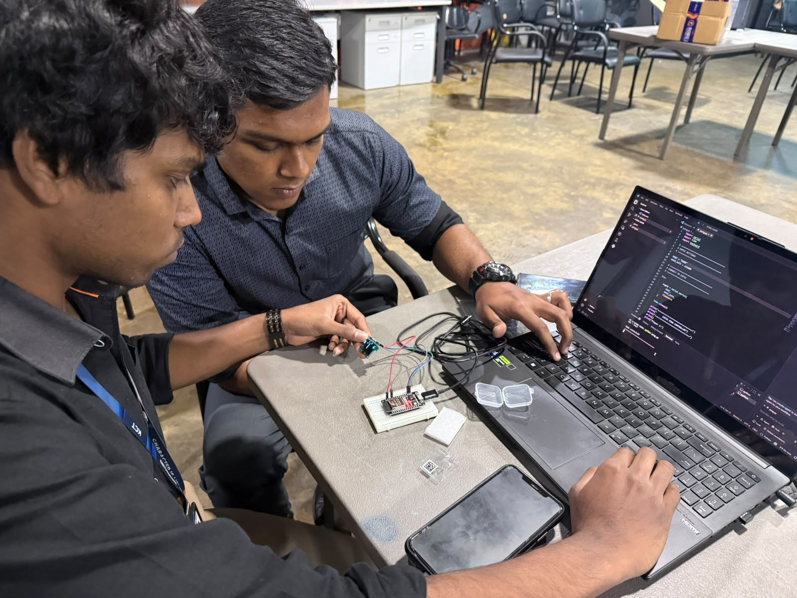

On / Off Inbuilt LED on ESP32
Control the ESP32 onboard LED wirelessly through a local browser-based HTTP server.
1. Overview
In this experiment, the ESP32 functions as a standalone local HTTP web server connected to a Wi-Fi network. By hosting a lightweight web page directly on the microcontroller, the device listens for incoming HTTP requests initiated from any web browser on the same local subnet.
When a user visits the assigned local IP address and clicks the interactive on-screen controls, the browser issues specific HTTP request endpoints (/on and /off). The ESP32 parses these URIs, toggles digital output pin GPIO 2 connected to the onboard surface-mount device (SMD) LED, and immediately returns dynamically updated HTML content confirming the live operational state of the LED.
2. Hardware
Key hardware specifications, peripheral mappings, and network endpoints configured for this assignment:
Microcontroller
NodeMCU ESP-WROOM-32
Actuator Output
Inbuilt SMD LED — GPIO 2
HTTP Web Server
Port 80 (Standard HTTP)
Assigned Network IP
Local IP — 192.168.56.206
3. System Architecture
End-to-end data and signal flow from client user input to physical actuator output:
Client Layer
Protocol
Embedded Host
Hardware Pin
Actuator
4. Implementation
Step-by-step procedural workflow executed to implement the embedded HTTP web server:
- 1. Identify GPIO 2: Located pin mapping for onboard blue SMD LED hardwired to GPIO 2 on the ESP32 development board.
- 2. Program using Arduino IDE: Developed embedded C++ sketch utilizing
WiFi.handWebServer.hlibraries with serial debugging configured. - 3. Connect ESP32 to Wi-Fi: Configured Wi-Fi Station (STA) credentials with polling loop until connected to local wireless access point.
- 4. Start HTTP Server: Initialized HTTP server on port 80 and bound URI route handlers (
/,/on,/off). - 5. Obtain Local IP: Extracted dynamically assigned IPv4 address via
WiFi.localIP()and printed to Serial Monitor. - 6. Open IP in Browser: Connected a client device to the same Wi-Fi subnet and navigated to
http://192.168.56.206. - 7. Use ON/OFF Controls: Interacted with the rendered UI buttons to toggle GPIO 2 output states and verify hardware actuation.
DOIT ESP32 DEVKIT V1 / ESP32 Dev Module
115200 bps
5. Source Code
1#include <WiFi.h>
2#include <WebServer.h>
3
4const char* ssid = "YOUR_WIFI_NAME";
5const char* password = "YOUR_WIFI_PASSWORD";
6
7const int ledPin = 2;
8
9WebServer server(80);
10
11String htmlPage() {
12 String state = digitalRead(ledPin) ? "ON" : "OFF";
13
14 String html = R"rawliteral(
15<!DOCTYPE html>
16<html>
17<head>
18 <meta name="viewport" content="width=device-width, initial-scale=1">
19 <title>ESP32 LED Control</title>
20 <style>
21 body {
22 font-family: Arial, sans-serif;
23 text-align: center;
24 background: #111;
25 color: white;
26 padding: 40px;
27 }
28 .button {
29 display: inline-block;
30 padding: 15px 30px;
31 margin: 10px;
32 color: white;
33 text-decoration: none;
34 border-radius: 8px;
35 font-size: 20px;
36 }
37 .on {
38 background: #00c853;
39 }
40 .off {
41 background: #d50000;
42 }
43 </style>
44</head>
45<body>
46 <h1>ESP32 LED Control</h1>
47 <p>LED State: <strong>)rawliteral";
48
49 html += state;
50
51 html += R"rawliteral(</strong></p>
52 <a class="button on" href="/on">TURN ON</a>
53 <a class="button off" href="/off">TURN OFF</a>
54</body>
55</html>
56)rawliteral";
57
58 return html;
59}
60
61void handleRoot() {
62 server.send(200, "text/html", htmlPage());
63}
64
65void handleLEDOn() {
66 digitalWrite(ledPin, HIGH);
67 server.send(200, "text/html", htmlPage());
68}
69
70void handleLEDOff() {
71 digitalWrite(ledPin, LOW);
72 server.send(200, "text/html", htmlPage());
73}
74
75void setup() {
76 Serial.begin(115200);
77
78 pinMode(ledPin, OUTPUT);
79 digitalWrite(ledPin, LOW);
80
81 WiFi.begin(ssid, password);
82
83 Serial.print("Connecting to WiFi");
84
85 while (WiFi.status() != WL_CONNECTED) {
86 delay(500);
87 Serial.print(".");
88 }
89
90 Serial.println();
91 Serial.println("WiFi Connected!");
92 Serial.print("ESP32 IP Address: ");
93 Serial.println(WiFi.localIP());
94
95 server.on("/", handleRoot);
96 server.on("/on", handleLEDOn);
97 server.on("/off", handleLEDOff);
98
99 server.begin();
100
101 Serial.println("HTTP server started");
102}
103
104void loop() {
105 server.handleClient();
106}6. Code Breakdown
WiFi.h
Manages Wi-Fi station connectivity, handles radio association with the wireless router using the provided SSID/password credentials, and exposes connection state methods such as WiFi.status() and WiFi.localIP().
WebServer.h
Provides the lightweight HTTP server implementation for ESP32. It enables URI route registration, parsing of incoming HTTP request headers, and sending HTTP responses with appropriate status codes and MIME types.
GPIO 2
The physical digital pin hardwired to the ESP32 development board's blue surface-mount LED. Configured as an OUTPUT and actuated between HIGH (3.3V) and LOW (0V).
WebServer(80)
Instantiates the HTTP server object bound to port 80, the standard default port for HTTP traffic, allowing clients to access the page without specifying a port suffix.
/ (Root Endpoint)
Root URI handler mapped to handleRoot(). Returns HTTP status 200 with the rendered control interface displaying the current operational state of the onboard LED.
/on (Turn On)
Action endpoint mapped to handleLEDOn(). Invokes digitalWrite(ledPin, HIGH) to illuminate the onboard LED, then serves the updated HTML page with "ON" state.
/off (Turn Off)
Action endpoint mapped to handleLEDOff(). Invokes digitalWrite(ledPin, LOW) to turn off the onboard LED, then serves the updated HTML page with "OFF" state.
server.handleClient()
Non-blocking function called in every iteration of loop(). Listens for incoming TCP socket connections, parses client HTTP requests, and routes them to registered handlers.
dynamic HTML
Constructed using C++ raw string literals (R"rawliteral(...)rawliteral") to embed CSS styling and markup directly in program memory. Concatenates the live evaluation of digitalRead(ledPin) to dynamically reflect the real-time LED state on the page.
7. Testing
Functional testing was conducted across local Wi-Fi network endpoints, observing serial diagnostics and physical LED state transitions:
http://192.168.56.206
Accesses root landing interface and displays current LED status.
→ /on → LED ON
GPIO 2 driven HIGH (3.3V). Onboard blue LED turns ON immediately.
→ /off → LED OFF
GPIO 2 driven LOW (0V). Onboard blue LED turns OFF immediately.
8. Key Learnings
Embedded Web Server Architecture
Learned how to turn a microchip into an autonomous web server by implementing the HTTP request-response cycle entirely on microcontroller hardware without external servers.
Non-Blocking Client Polling
Understood how server.handleClient() processes network socket events in a lightweight non-blocking loop, keeping the microcontroller responsive to incoming connections.
GPIO Digital Output & Feedback
Gained practical experience interfacing logical web routes to low-level hardware actuation and feeding back physical pin states into generated HTML.
Local Subnet Addressing & Port Mapping
Observed how DHCP assigns IP addresses within a private WLAN and how standard port 80 routing facilitates client-side browser navigation without special software.
9. Event Gallery

ESP32 Hardware Testing & Firmware Development at Lab Workstation
10. Video Demonstration
ESP32 Inbuilt LED Web Control
Demonstration of controlling the ESP32 onboard LED through the local HTTP web server using browser ON/OFF commands.
11. Repository
Full source code, circuit configuration notes, and documentation for Task 01:
View Repository →